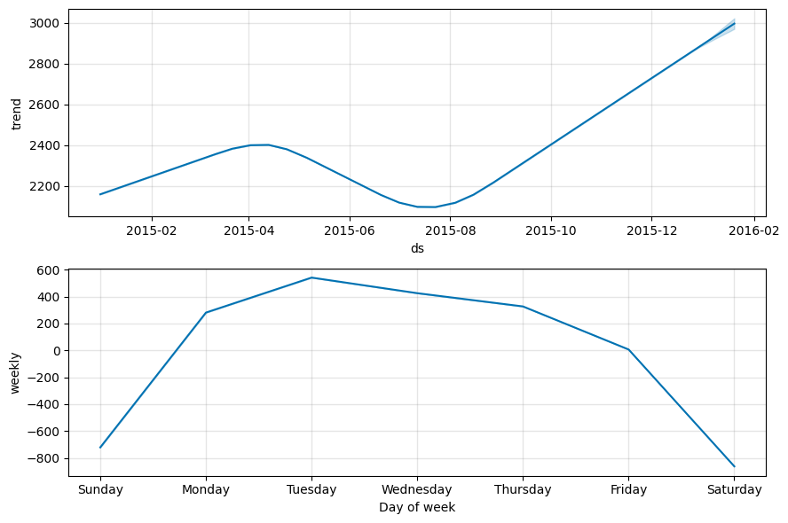
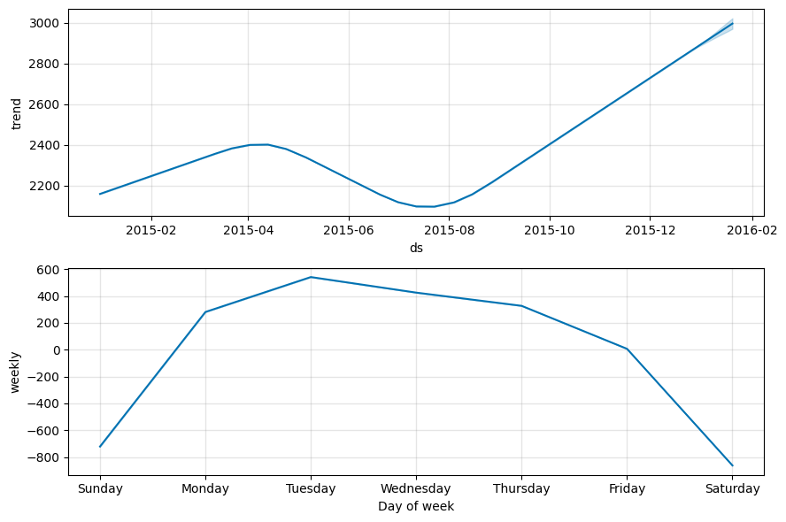

Assignment #9 (demo). Time series analysis. Solution¶

Author: Mariya Mansurova, Analyst & developer in Yandex.Metrics team. Translated by Ivan Zakharov, ML enthusiast.
This material is subject to the terms and conditions of the Creative Commons CC BY-NC-SA 4.0 license. Free use is permitted for any non-commercial purpose.
Same assignment as a Kaggle Notebook + solution.
Fill cells marked with “Your code here” and submit your answers to the questions through the web form.
import warnings
warnings.filterwarnings("ignore")
import os
import numpy as np
import pandas as pd
import requests
from plotly import __version__
from plotly import graph_objs as go
from plotly.offline import download_plotlyjs, init_notebook_mode, iplot, plot
print(__version__) # need 1.9.0 or greater
init_notebook_mode(connected=True)
def plotly_df(df, title=""):
data = []
for column in df.columns:
trace = go.Scatter(x=df.index, y=df[column], mode="lines", name=column)
data.append(trace)
layout = dict(title=title)
fig = dict(data=data, layout=layout)
iplot(fig, show_link=False)
5.4.0
Data preparation¶
# for Jupyter-book, we copy data from GitHub, locally, to save Internet traffic,
# you can specify the data/ folder from the root of your cloned
# https://github.com/Yorko/mlcourse.ai repo, to save Internet traffic
DATA_PATH = "https://raw.githubusercontent.com/Yorko/mlcourse.ai/master/data/"
df = pd.read_csv(DATA_PATH + "wiki_machine_learning.csv", sep=" ")
df = df[df["count"] != 0]
df.head()
| date | count | lang | page | rank | month | title | |
|---|---|---|---|---|---|---|---|
| 81 | 2015-01-01 | 1414 | en | Machine_learning | 8708 | 201501 | Machine_learning |
| 80 | 2015-01-02 | 1920 | en | Machine_learning | 8708 | 201501 | Machine_learning |
| 79 | 2015-01-03 | 1338 | en | Machine_learning | 8708 | 201501 | Machine_learning |
| 78 | 2015-01-04 | 1404 | en | Machine_learning | 8708 | 201501 | Machine_learning |
| 77 | 2015-01-05 | 2264 | en | Machine_learning | 8708 | 201501 | Machine_learning |
df.shape
(383, 7)
Predicting with FB Prophet¶
We will train at first 5 months and predict the number of trips for June.
df.date = pd.to_datetime(df.date)
plotly_df(df.set_index("date")[["count"]])
from prophet import Prophet
predictions = 30
df = df[["date", "count"]]
df.columns = ["ds", "y"]
df.tail()
| ds | y | |
|---|---|---|
| 382 | 2016-01-16 | 1644 |
| 381 | 2016-01-17 | 1836 |
| 376 | 2016-01-18 | 2983 |
| 375 | 2016-01-19 | 3389 |
| 372 | 2016-01-20 | 3559 |
train_df = df[:-predictions].copy()
m = Prophet()
m.fit(train_df);
INFO:prophet:Disabling yearly seasonality. Run prophet with yearly_seasonality=True to override this.
INFO:prophet:Disabling daily seasonality. Run prophet with daily_seasonality=True to override this.
Initial log joint probability = -6.51788
Iter log prob ||dx|| ||grad|| alpha alpha0 # evals Notes
64 768.231 0.000797845 100.429 8.428e-06 0.001 118 LS failed, Hessian reset
94 768.53 0.000644625 86.6531 5.317e-06 0.001 189 LS failed, Hessian reset
99 768.558 0.000105737 60.2116 0.6018 1 196
Iter log prob ||dx|| ||grad|| alpha alpha0 # evals Notes
137 768.583 4.4291e-05 71.1494 7.124e-07 0.001 287 LS failed, Hessian reset
172 768.587 1.50151e-06 70.4223 2.731e-08 0.001 367 LS failed, Hessian reset
187 768.587 4.20131e-08 70.8813 0.5017 0.5017 387
Optimization terminated normally:
Convergence detected: relative gradient magnitude is below tolerance
future = m.make_future_dataframe(periods=predictions)
future.tail()
| ds | |
|---|---|
| 378 | 2016-01-16 |
| 379 | 2016-01-17 |
| 380 | 2016-01-18 |
| 381 | 2016-01-19 |
| 382 | 2016-01-20 |
forecast = m.predict(future)
forecast.tail()
| ds | trend | yhat_lower | yhat_upper | trend_lower | trend_upper | additive_terms | additive_terms_lower | additive_terms_upper | weekly | weekly_lower | weekly_upper | multiplicative_terms | multiplicative_terms_lower | multiplicative_terms_upper | yhat | |
|---|---|---|---|---|---|---|---|---|---|---|---|---|---|---|---|---|
| 378 | 2016-01-16 | 2981.107031 | 1670.466963 | 2511.401997 | 2962.691290 | 2998.234362 | -861.706598 | -861.706598 | -861.706598 | -861.706598 | -861.706598 | -861.706598 | 0.0 | 0.0 | 0.0 | 2119.400433 |
| 379 | 2016-01-17 | 2986.528144 | 1885.405163 | 2651.228169 | 2966.895309 | 3004.709105 | -720.723367 | -720.723367 | -720.723367 | -720.723367 | -720.723367 | -720.723367 | 0.0 | 0.0 | 0.0 | 2265.804777 |
| 380 | 2016-01-18 | 2991.949256 | 2876.084823 | 3676.509570 | 2971.167345 | 3011.382177 | 281.345187 | 281.345187 | 281.345187 | 281.345187 | 281.345187 | 281.345187 | 0.0 | 0.0 | 0.0 | 3273.294444 |
| 381 | 2016-01-19 | 2997.370369 | 3141.507179 | 3935.630352 | 2975.348648 | 3018.333172 | 541.447411 | 541.447411 | 541.447411 | 541.447411 | 541.447411 | 541.447411 | 0.0 | 0.0 | 0.0 | 3538.817781 |
| 382 | 2016-01-20 | 3002.791482 | 3031.115494 | 3834.525603 | 2979.618110 | 3024.649573 | 425.564874 | 425.564874 | 425.564874 | 425.564874 | 425.564874 | 425.564874 | 0.0 | 0.0 | 0.0 | 3428.356356 |
Question 1: What is the prediction of the number of views of the wiki page on January 20? Round to the nearest integer.
4947
3426 [+]
5229
2744
m.plot(forecast)
m.plot_components(forecast)
 

cmp_df = forecast.set_index("ds")[["yhat", "yhat_lower", "yhat_upper"]].join(
df.set_index("ds")
)
cmp_df["e"] = cmp_df["y"] - cmp_df["yhat"]
cmp_df["p"] = 100 * cmp_df["e"] / cmp_df["y"]
print("MAPE = ", round(np.mean(abs(cmp_df[-predictions:]["p"])), 2))
print("MAE = ", round(np.mean(abs(cmp_df[-predictions:]["e"])), 2))
MAPE = 34.58
MAE = 601.36
Estimate the quality of the prediction with the last 30 points.
Question 2: What is MAPE equal to?
34.5 [+]
42.42
5.39
65.91
Question 3: What is MAE equal to?
355
4007
600 [+]
903
Predicting with ARIMA¶
%matplotlib inline
import matplotlib.pyplot as plt
import statsmodels.api as sm
from scipy import stats
plt.rcParams["figure.figsize"] = (15, 10)
Question 4: Let’s verify the stationarity of the series using the Dickey-Fuller test. Is the series stationary? What is the p-value?
Series is stationary, p_value = 0.107
Series is not stationary, p_value = 0.107 [+]
Series is stationary, p_value = 0.001
Series is not stationary, p_value = 0.001
sm.tsa.seasonal_decompose(train_df["y"].values, period=7).plot()
print("Dickey-Fuller test: p=%f" % sm.tsa.stattools.adfuller(train_df["y"])[1])
Dickey-Fuller test: p=0.107392
But the seasonally differentiated series will already be stationary.
train_df.set_index("ds", inplace=True)
train_df["y_diff"] = train_df.y - train_df.y.shift(7)
sm.tsa.seasonal_decompose(train_df.y_diff[7:].values, period=7).plot()
print("Dickey-Fuller test: p=%f" % sm.tsa.stattools.adfuller(train_df.y_diff[8:])[1])
Dickey-Fuller test: p=0.000000
ax = plt.subplot(211)
sm.graphics.tsa.plot_acf(train_df.y_diff[13:].values.squeeze(), lags=48, ax=ax)
ax = plt.subplot(212)
sm.graphics.tsa.plot_pacf(train_df.y_diff[13:].values.squeeze(), lags=48, ax=ax)

Initial values:
Q = 1
q = 3
P = 3
p = 1
ps = range(0, 2)
ds = range(0, 2)
qs = range(0, 4)
Ps = range(0, 4)
Ds = range(0, 3)
Qs = range(0, 2)
from itertools import product
parameters = product(ps, ds, qs, Ps, Ds, Qs)
parameters_list = list(parameters)
len(parameters_list)
384
%%time
import warnings
from tqdm.notebook import tqdm
results1 = []
best_aic = float("inf")
warnings.filterwarnings("ignore")
for param in tqdm(parameters_list):
# try except is necessary, because on some sets of parameters the model can not be trained
try:
model = sm.tsa.statespace.SARIMAX(
train_df["y"],
order=(param[0], param[1], param[2]),
seasonal_order=(param[3], param[4], param[5], 7),
).fit(disp=-1)
# print parameters on which the model is not trained and proceed to the next set
except (ValueError, np.linalg.LinAlgError):
continue
aic = model.aic
# save the best model, aic, parameters
if aic < best_aic:
best_model = model
best_aic = aic
best_param = param
results1.append([param, model.aic])
CPU times: user 47min 3s, sys: 9min 35s, total: 56min 39s
Wall time: 5h 45min 1s
result_table1 = pd.DataFrame(results1)
result_table1.columns = ["parameters", "aic"]
print(result_table1.sort_values(by="aic", ascending=True).head())
parameters aic
41 (0, 0, 1, 3, 0, 1) 12.000000
375 (1, 1, 3, 3, 0, 1) 50.686791
229 (1, 0, 1, 2, 2, 1) 94.779834
349 (1, 1, 2, 2, 2, 1) 1538.043981
163 (0, 1, 2, 3, 2, 1) 4961.632628
If we consider the variants proposed in the form:
result_table1[
result_table1["parameters"].isin(
[(1, 0, 2, 3, 1, 0), (1, 1, 2, 3, 2, 1), (1, 1, 2, 3, 1, 1), (1, 0, 2, 3, 0, 0)]
)
]
| parameters | aic | |
|---|---|---|
| 254 | (1, 0, 2, 3, 0, 0) | 5183.807076 |
| 256 | (1, 0, 2, 3, 1, 0) | 5022.312524 |
| 353 | (1, 1, 2, 3, 1, 1) | 5019.555903 |
| 355 | (1, 1, 2, 3, 2, 1) | 4988.974735 |
Now do the same, but for the series with Box-Cox transformation.
import scipy.stats
train_df["y_box"], lmbda = scipy.stats.boxcox(train_df["y"])
print("The optimal Box-Cox transformation parameter: %f" % lmbda)
The optimal Box-Cox transformation parameter: 0.732841
results2 = []
best_aic = float("inf")
for param in tqdm(parameters_list):
# try except is necessary, because on some sets of parameters the model can not be trained
try:
model = sm.tsa.statespace.SARIMAX(
train_df["y_box"],
order=(param[0], param[1], param[2]),
seasonal_order=(param[3], param[4], param[5], 7),
).fit(disp=-1)
# print parameters on which the model is not trained and proceed to the next set
except (ValueError, np.linalg.LinAlgError):
continue
aic = model.aic
# save the best model, aic, parameters
if aic < best_aic:
best_model = model
best_aic = aic
best_param = param
results2.append([param, model.aic])
warnings.filterwarnings("default")
result_table2 = pd.DataFrame(results2)
result_table2.columns = ["parameters", "aic"]
print(result_table2.sort_values(by="aic", ascending=True).head())
parameters aic
83 (0, 0, 3, 2, 0, 0) 12.000000
355 (1, 1, 2, 3, 2, 0) 14.000000
90 (0, 0, 3, 3, 0, 1) 16.000000
260 (1, 0, 2, 3, 2, 1) 3528.651117
213 (1, 0, 0, 3, 2, 1) 3530.524249
If we consider the variants proposed in the form:
result_table2[
result_table2["parameters"].isin(
[(1, 0, 2, 3, 1, 0), (1, 1, 2, 3, 2, 1), (1, 1, 2, 3, 1, 1), (1, 0, 2, 3, 0, 0)]
)
].sort_values(by="aic")
| parameters | aic | |
|---|---|---|
| 356 | (1, 1, 2, 3, 2, 1) | 3534.540192 |
| 257 | (1, 0, 2, 3, 1, 0) | 3556.880030 |
| 354 | (1, 1, 2, 3, 1, 1) | 3557.851778 |
| 255 | (1, 0, 2, 3, 0, 0) | 3674.915958 |
Next, we turn to the construction of the SARIMAX model (sm.tsa.statespace.SARIMAX).
Question 5: What parameters are the best for the model according to the AIC criterion?
D = 1, d = 0, Q = 0, q = 2, P = 3, p = 1
D = 2, d = 1, Q = 1, q = 2, P = 3, p = 1 [+]
D = 1, d = 1, Q = 1, q = 2, P = 3, p = 1
D = 0, d = 0, Q = 0, q = 2, P = 3, p = 1
Let’s look at the forecast of the best AIC model.
print(best_model.summary())
SARIMAX Results
==========================================================================================
Dep. Variable: y_box No. Observations: 353
Model: SARIMAX(0, 0, 3)x(2, 0, [], 7) Log Likelihood 0.000
Date: Tue, 28 Dec 2021 AIC 12.000
Time: 10:38:49 BIC 35.199
Sample: 0 HQIC 21.231
- 353
Covariance Type: opg
==============================================================================
coef std err z P>|z| [0.025 0.975]
------------------------------------------------------------------------------
ma.L1 -0.8346 -0 inf 0.000 -0.835 -0.835
ma.L2 -0.8356 -0 inf 0.000 -0.836 -0.836
ma.L3 0.9990 -0 -inf 0.000 0.999 0.999
ar.S.L7 -0.0008 -0 inf 0.000 -0.001 -0.001
ar.S.L14 0.9992 -0 -inf 0.000 0.999 0.999
sigma2 1.045e+06 -0 -inf 0.000 1.05e+06 1.05e+06
===================================================================================
Ljung-Box (L1) (Q): nan Jarque-Bera (JB): 132.38
Prob(Q): nan Prob(JB): 0.00
Heteroskedasticity (H): nan Skew: 0.00
Prob(H) (two-sided): nan Kurtosis: 0.00
===================================================================================
Warnings:
[1] Covariance matrix calculated using the outer product of gradients (complex-step).
[2] Covariance matrix is singular or near-singular, with condition number inf. Standard errors may be unstable.
/Users/kashnitskiyy/opt/anaconda3/envs/mlcourse/lib/python3.8/site-packages/statsmodels/tsa/statespace/mlemodel.py:2968: RuntimeWarning:
divide by zero encountered in true_divide
/Users/kashnitskiyy/opt/anaconda3/envs/mlcourse/lib/python3.8/site-packages/statsmodels/tsa/stattools.py:1339: RuntimeWarning:
invalid value encountered in true_divide
/Users/kashnitskiyy/opt/anaconda3/envs/mlcourse/lib/python3.8/site-packages/statsmodels/tsa/stattools.py:677: RuntimeWarning:
invalid value encountered in true_divide
plt.subplot(211)
best_model.resid[13:].plot()
plt.ylabel(u"Residuals")
ax = plt.subplot(212)
sm.graphics.tsa.plot_acf(best_model.resid[13:].values.squeeze(), lags=48, ax=ax)
print("Student's test: p=%f" % stats.ttest_1samp(best_model.resid[13:], 0)[1])
print("Dickey-Fuller test: p=%f" % sm.tsa.stattools.adfuller(best_model.resid[13:])[1])
Student's test: p=0.000000
Dickey-Fuller test: p=0.119300

def invboxcox(y, lmbda):
# reverse Box Cox transformation
if lmbda == 0:
return np.exp(y)
else:
return np.exp(np.log(lmbda * y + 1) / lmbda)
train_df["arima_model"] = invboxcox(best_model.fittedvalues, lmbda)
train_df.y.tail(200).plot()
train_df.arima_model[13:].tail(200).plot(color="r")
plt.ylabel("wiki pageviews");